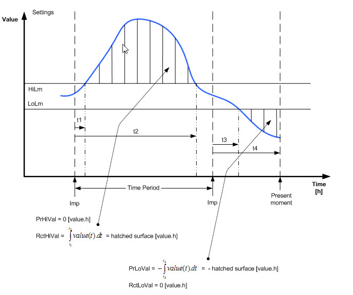
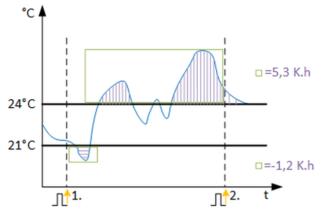

[DVN_PRD] Deviation of a period
功能块 DVN_PRD 确定特定时间段内模拟值高于或低于某个范围的偏差。 The deviation is integrated via time.
DVN_PRD 确定特定时间段内模拟值高于或低于某个范围的偏差。偏差随时间积分。
Enable and disable the function
如果启用该功能（EnFnct 和 EnEvl = 1）并且模拟输入可靠（Vldty = 1），则在一段时间内确定模拟输入 [In] 高于和低于范围的设定点偏差。
偏差随时间积分。
Calculation
当前时间段的偏差显示在 [PrHiVal] 和 [PrLoVal] 上，其中低于设定值的负偏差会被赋予负号以进行区分。时间段结束后，当前的上下偏差通过脉冲保存为最近时间段[RctHiVal]和[RctLoVal]的上下偏差。输出 [PrxxVal] 的起始值在脉冲后通过 (1/3600) x (xxLm - In) 计算。如果模拟值在极限值范围 [HiLm] 和 [LoLm] 内，则不会对偏差进行积分。在 DVN_PRD 外部生成的时间周期是通过输入 [Imp] 上的上升斜率确定的。如果输入信号无效（Vldty = 0），计算停止。输出的最后一个有效值将被冻结，直到信号再次有效。

Subperiods within time periods
输入 [EnEvl] 可用于评估整个时间段内的子周期。当 EnEvl = 0 时，评估被禁用并且最后的有效值显示在输出上。在一个脉冲中，当前的上限和下限偏差被保存为最近时间段的值。
Reset
所有当前值和最近值均通过输入 [重置] 上的上升斜率设置为零。
输入 | 描述 | 数据类型 | 默认值 |
|---|---|---|---|
EnFnct | 启用功能 启用该功能。 | 布尔值 | 1 |
0 - 该功能被禁用。 | |||
EnEvl | Enable evaluation | 布尔值 | 1 |
0 - 评估被禁用并且输出端的有效值被冻结。 | |||
In | Input 输入信号 | 真实的 | 0.0 |
Imp | Impulse 确定评估时间周期的脉冲输入。上升沿表示新周期的开始。 | 布尔值 | 0 |
0 - 否 | |||
|
Vldty | Validity 当前和最近时间段的偏差只能使用有效的输入信号来计算。 | 布尔值 | 1 |
0 - 输入信号无效。 | |||
HiLm | High limit | 真实的 | 23.0 |
LoLm | Low limit | 真实的 | 21.0 |
Reset | Reset | 布尔值 | 0 |
0 - 否 | |||
Pers | Persistent | 布尔值 | 0 |
0 - No | |||
TshVal | Threshold value | 真实的 | 0.1 |
|
BaObjRef | BA-Object reference | 结构 | --- |
BaObjRef | Device identifier | 双字 | 16#3FFFFF |
BaObjRef | Object identifier | 双字 | 16#3FFFFF |
BaObjRef | Item identifier | 整数 | -1 |
输出 | 描述 | 数据类型 | 默认值 |
|---|---|---|---|
PrHiVal | Present high value | 真实的 | 0.0 |
RctHiVal | Recent high value | 真实的 | 0.0 |
PrLoVal | Present low value 用于区分目的的负号 | 真实的 | 0.0 |
RctLoVal | Recent low value 用于区分目的的负号 | 真实的 | 0.0 |
Dstb | Disturbed [Dstb] 指示是否访问了引用的 BACnet 对象。 | 布尔值 | 0 |
ErrCode | Error code indication | 整数 | 0: No error |
= 0 - No error | |||
DVN_PRD 用于计算一段时间内模拟输入值相对于极限值范围的上下偏差。偏差随时间积分。如果在一段时间内（1 小时）内偏差恒定为 1 K，则偏差为 1K/h.。偏差也可能在 0.5 小时内为 2 K，这再次导致积分偏差为 1K/h.
通过确定特定时间段内的设定点偏差，可以更早、更快地发现错误，例如错误的控制参数、设定点违规或手动干预。
以下示例基于评估期 = 1 天：
